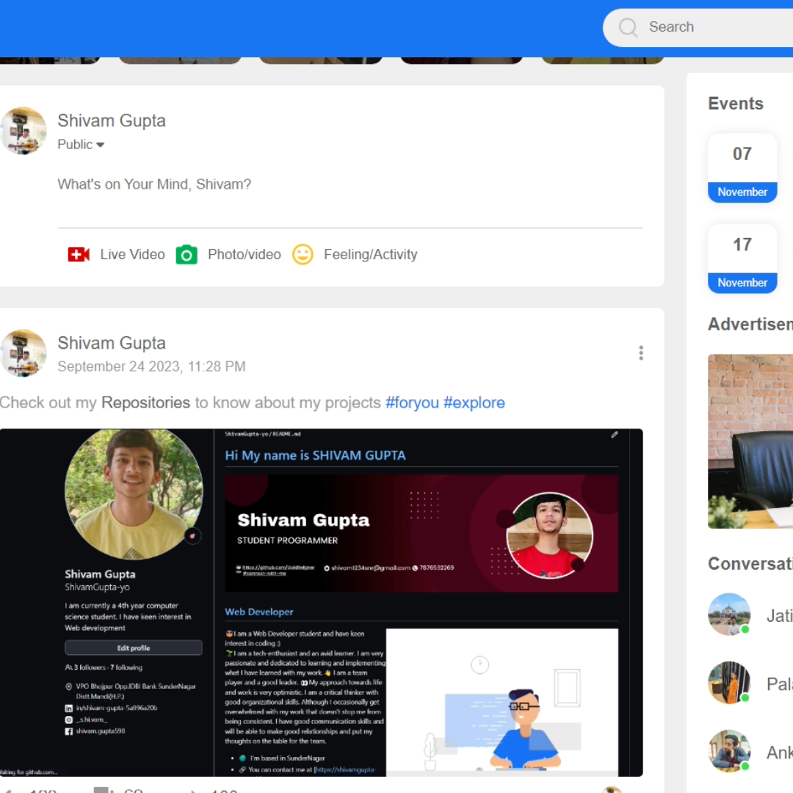

SocialBook is a web-based social media platform template, complete with a navigation bar, user profiles, a news feed, stories, events, advertisements, and many more. It offers a solid starting point for web developers and aspiring social media entrepreneurs. You can use this project to learn HTML, CSS, and JavaScript and customize it to suit your specific needs. Whether you're looking to create your own social media platform or enhance your web development skills, SocialBook provides a versatile and practical foundation.
This is the home page of Amazon Website and made using
languages HTML,CSS currently. Soon, it will have many options
so stay tuned!